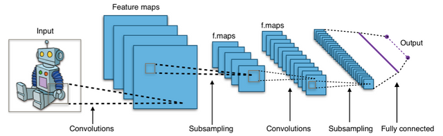

AI/Machine-Learning Engineer, applying deep neural networks to reinforcement learning, computer vision, and other interesting problems! In the process of finishing a paper on Artificial Neural Networks in predicting MLB and NBA outcomes. Background in applied Cryptography and strong full-stack dev experience as well. In my free-time you can catch me working on my latest research or at a chess tournament.
About Me
Projects
Deep Learning Maths
Learning Arithmetic with Artificial Neural Networks

New
Encoding equations as hot encoded sequences, utilizing a bidirectional LSTM to learn the function y = x*x from generated examples. As is derived from the Universal Approximation Theorem, ANNs can approximate any continouous function..
Computer Vision
Simple Binary Classification Using Artificial Neural Networks in Under 1 Hour(Tensorflow + Keras)

New
Computer vision is by far one of the most popular use cases for modern machine learning algorithms(with natural language processing(NLP/NLU) and reinforcement learning(RL). However, neural networks have only just broken into mainstream use. In 2012..
Reinforcement Learning applied to Portfolio Management in the Cryptocurrency Market
RL is the subfield in AI I both find most interesting and know the most about. The methodologies and architectures there in are quite intuitive to the point that our brain/nervous system have been shown to perform reinforcement learning via our dopaminergic system. Here we use these concepts in RL to great effect in the problem of portfolio management, based in part on the paper by Jiang et al.
Batters Up - Using Artificial Neural Networks to Predict the Outcome of Sporting Events
Sports are one of the foremost realms of research when it comes to modern machine learning algorithms. This is due in part, to the massive amounts of data and statistics that are available on these events going back many decades. Here I create ANNs capable of besting even the best human sportscasters as well as other research models that are freely available on preprint or in journals on a variety of tasks wrt sports prediction. My preprint on these new state-of-the-art models will be available in the coming months.
Applied Computer Vision - Utilizing Public Live Feeds for use in Self-Driving Cars
One interesting project currently ongoing is using public video feeds(such as ones that exist on street corners) as an additional data stream to increase self-driving car awareness and effectiveness, especially in dense, urban areas. Further, I implement GPS location to determine relevant feeds in the local vicinity as well as preprocess the data and apply our own algorithms to act as useful mediator and forego any additional processing that would otherwise be necessary by the target vehicle. When finished, this will act as an API that will provide an extra safety and understanding for the top self-driving systems.
Research I'm Following
AlphaStar: Mastering the Real-Time Strategy Game StarCraft II
Games have been used for decades as an important way to test and evaluate the performance of artificial intelligence systems. As capabilities have increased, the research community has sought games with increasing complexity that capture different elements of intelligence required to solve scientific and real-world problems. In recent years, StarCraft, considered to be one of the most challenging Real-Time Strategy (RTS) games and one of the longest-played esports..
JUMPOUT : IMPROVED DROPOUT FOR DEEP NEURAL NETWORKS WITH RECTIFIED LINEAR UNITS
Dropout is a simple yet effective technique to improve the generalization performance and prevent overfitting in deep neural networks (DNNs). In this paper, we discuss three novel observations about dropout to better understand the generalization of DNNs with rectified linear unit (ReLU) activations: 1) dropout is a smoothing technique that encourages each local linear model of a DNN to be trained on data points from nearby region...
Oldie but Goodie - A computational theory of human stereo vision
An algorithm is proposed for solving the stereoscopic matching problem. The algorithm consists of five steps: (1) Each image is filtered at different orientations with bar masks of four sizes that increase with eccentricity; the equivalent filters are one or two octaves wide. (2) Zero-crossings in the filtered images, which roughly correspond to edges, are localized. Positions of the ends of lines and edges are also found. (3) For each mask orientation and size, matching takes place between pairs of zero-crossings or terminations of the same sign in the two images, for a range of disparities up to about the width of the mask’s central region...
Work Experience
Artificial Intelligence Engineer - Turing Completed (2017 - Present)
Here I have been developing cutting-edge machine learning models and architectures to be applied to novel and interesting problems in the subfields of reinforcement learning, computer vision, and more.
ML Engineer/Full-stack Dev - Stareable (2016-2017)
Developed a custom recommendation system that determined webseries to watch based on user preferences by utilizing modern machine learning algorithms.
Software Engineer - Portable Hats (2014-2016)
Created useful applications that made custom encryption beautiful and simple.